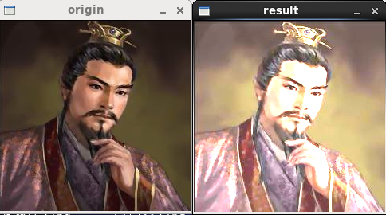

/*
* FileName : contrast.cpp
* Author : xiahouzuoxin @163.com
* Version : v1.0
* Date : Tue 29 Jul 2014 08:09:57 PM CST
* Brief :
*
* Copyright (C) MICL,USTB
*/
#include <cv.h>
#include <highgui.h>
#include <iostream>
using namespace cv;
using namespace std;
int main(int argc, char *argv[])
{
float alpha = 0;
int beta = 0;
Mat image;
Mat result;
if (argc<2) {
cout<<"Usage:./contrast [image_name]"<<endl;
return -1;
}
image = imread(argv[1]);
if (!image.data) {
cout<<"Read image error."<<endl;
}
cout<<"Enter alpha value[1-3]:"<<endl;
cin>>alpha;
cout<<"Enter beta value[0-100]:"<<endl;
cin>>beta;
result.create(image.size(), image.type());
int n = image.rows * image.cols * image.channels();
uchar *p = image.data;
uchar *q = result.data;
for (int i=0; i<n; i++) {
*q++ = saturate_cast<uchar>(alpha * (*p++) + beta);
}
namedWindow("origin", CV_WINDOW_AUTOSIZE);
imshow("origin", image);
namedWindow("result", CV_WINDOW_AUTOSIZE);
imshow("result", result);
waitKey(0);
return 0;
}saturate_cast在operations.hpp中定义和声明，这里的传人参数为float类型，调用的是
template<> inline uchar saturate_cast<uchar>(float v)
{int iv = cvRound(v); return saturate_cast<uchar>(iv);}其中调用重载函数saturate_cast
template<> inline uchar saturate_cast<uchar>(int v)
{return (uchar)((unsigned)v <= UCHAR_MAX ? v : v > 0 ? UCHAR_MAX : 0)}由于?:运算符是右结合特性，saturate_cast函数的作用就是：限制数据范围为0~255，超过255的值取255，小于0的值取0
像素操作：这里没有使用ptr指针（因为操作不用考虑像素的具体x、y坐标，是单像素到单像素的映射），当然使用ptr也可以。Mat的data成员是数据头指针，程序通过指针p与q索引图片中的元素进行操作赋值

左边为元素图像，右边为alpha=1，Beta=50时的增强亮度后的图像。